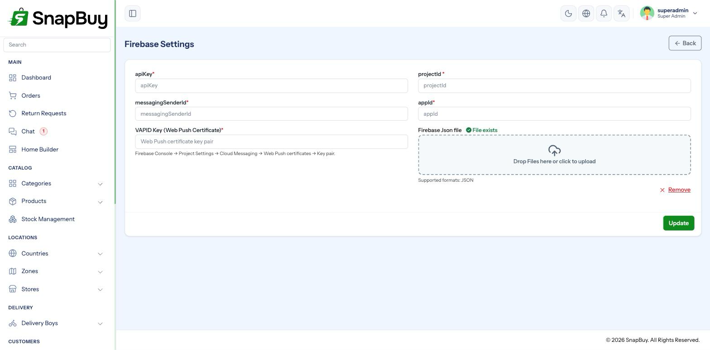

Firebase Settings
Setup Guide step 6 of 9. Menu path: Settings → Firebase Settings
Firebase powers three things in SnapBuy:
| Feature | What Firebase does |
|---|---|
| Phone / OTP login | Sends and verifies the OTP customers log in with |
| Push notifications | Delivers order updates and campaigns to apps and web |
| Web push | The same, in browsers, via a service worker |

Two halves, both required
Firebase setup has two parts, and the Setup Guide only ticks when both are done:
- The web config keys typed into the form.
- The service account JSON file uploaded, which is saved to
config/firebase.jsonon the server.
The keys alone let the apps talk to Firebase. The service account is what lets your server send push notifications. Uploading only the keys is the single most common reason notifications never arrive.
Create a Firebase project
- Go to console.firebase.google.com and sign in.
- Click Add project, name it, and finish the wizard.
- Google Analytics is optional.
Get the web config keys
- In the Firebase console, open Project settings (the gear icon).
- Scroll to Your apps.
- Click the Web icon (
</>) to register a web app. - Give it a nickname and register it.
- Firebase shows a
firebaseConfigblock.
const firebaseConfig = {
apiKey: "AIzaSy...",
authDomain: "your-project.firebaseapp.com",
projectId: "your-project",
storageBucket: "your-project.appspot.com",
messagingSenderId: "123456789012",
appId: "1:123456789012:web:abc123"
};Copy these into the SnapBuy form:
| SnapBuy field | Firebase value | Required |
|---|---|---|
| API Key | apiKey | Yes |
| Project ID | projectId | Yes |
| Messaging Sender ID | messagingSenderId | Yes |
| App ID | appId | Yes |
| Auth Domain | authDomain | Recommended |
| Storage Bucket | storageBucket | Recommended |
| VAPID Key | See below | For web push |
Get the VAPID key
Web push in browsers needs a separate key pair.
- Project settings → Cloud Messaging.
- Under Web configuration → Web Push certificates, click Generate key pair.
- Copy the key string into VAPID Key.
Only needed for web push
If you are not sending notifications to browsers, you can leave this blank. Mobile push does not use it.
Upload the service account JSON
This is the half that gets missed.
- Project settings → Service accounts.
- Click Generate new private key, then confirm.
- A
.jsonfile downloads. - In SnapBuy, use the Firebase JSON File upload field to attach it, and save.
SnapBuy stores it at config/firebase.json on your server.
Treat this file as a password
The service account JSON grants full administrative access to your Firebase project. Never commit it to source control, never email it, and never place it inside a publicly reachable folder. If it leaks, revoke the key in the Firebase console immediately and generate a new one.
"Notifications are configured but nothing arrives"
Check that config/firebase.json actually exists on the server. If the upload failed silently — usually a permissions problem on the config/ folder — the keys are saved but the server cannot authenticate to send anything.
The Setup Guide's Firebase step checks for this file specifically, so a red Firebase step with all keys filled means the file is missing.
Enable phone authentication
For OTP login:
- In Firebase, open Authentication → Sign-in method.
- Enable Phone.
- Add your panel domain under Authentication → Settings → Authorized domains.
Firebase phone auth is billed beyond the free tier
Phone OTP verification has a monthly free allowance; past it, Google charges per verification and requires the Blaze plan. A store with heavy signup traffic will hit this.
The alternative is OTP over your own SMS gateway — see SMS Settings. SnapBuy requires one of the two when phone login is enabled: if you turn off Firebase Authentication, you must enable a custom SMS gateway, or saving fails with a validation error.
Mobile apps need their own files
The keys on this page cover the admin panel and web. The Customer and Delivery Boy apps need their own Firebase app registrations and config files:
- Android — register an Android app with your package name, download
google-services.json - iOS — register an iOS app with your bundle ID, download
GoogleService-Info.plist
See Customer App Firebase Setup and Delivery Boy App Firebase Setup.
All of it must be the same Firebase project
The panel, the customer app and the delivery app must point at one Firebase project. Split across projects, tokens registered by the apps are unknown to the server and push silently fails.
Web push service worker
SnapBuy serves the messaging service worker from /firebase-messaging-sw.js, generated from the settings you save — you do not create this file yourself.
Web push requires HTTPS
Browsers refuse to register a service worker over plain HTTP. Web push will not work until SSL is installed. See Create a Subdomain.
Testing
- Save the settings and visit
/clearonce. - Open Notifications → Send Notification and send a test to yourself.
- Check delivery on a real device — emulators are unreliable for push.
Push sending is queued
Notifications are dispatched as queued jobs. Without the cron job they are never sent, and the panel still reports success. If a test notification never arrives, check Settings → Cron Jobs before re-checking Firebase.
Troubleshooting
| Symptom | Cause | Fix |
|---|---|---|
| Setup Guide Firebase step stays red | config/firebase.json missing | Re-upload the service account; check config/ is writable |
| OTP never arrives | Phone sign-in not enabled, or domain not authorised | Enable Phone; add the domain to Authorized domains |
| OTP works then stops | Free tier exhausted | Upgrade to Blaze, or switch to an SMS gateway |
| Push works on Android, not iOS | APNs key not uploaded to Firebase | Add the APNs auth key under Cloud Messaging |
| Web push does nothing | Missing VAPID key, or site not on HTTPS | Generate the key pair; install SSL |
| Notifications sent, none delivered | Queue not processed | Set up the cron job |
| "Requested entity was not found" | Panel and apps on different Firebase projects | Point everything at one project |
Checklist
- Firebase project created
- Web app registered; API Key, Project ID, Sender ID, App ID entered
- Auth Domain and Storage Bucket entered
- VAPID key generated and entered (for web push)
- Service account JSON uploaded;
config/firebase.jsonexists - Phone sign-in enabled and domain authorised
- Android and iOS apps registered in the same project
- Test notification received on a real device